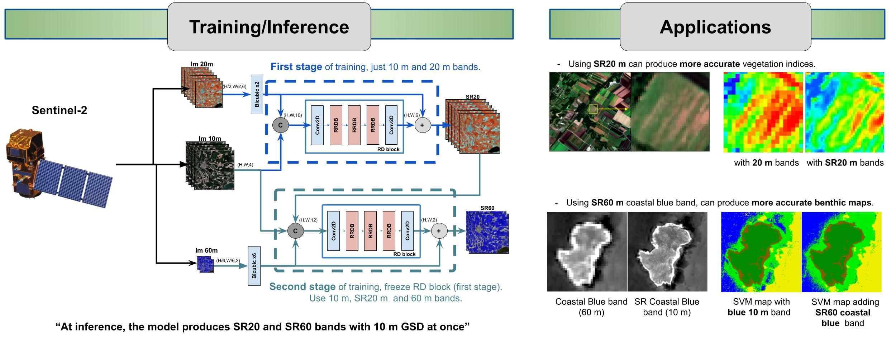
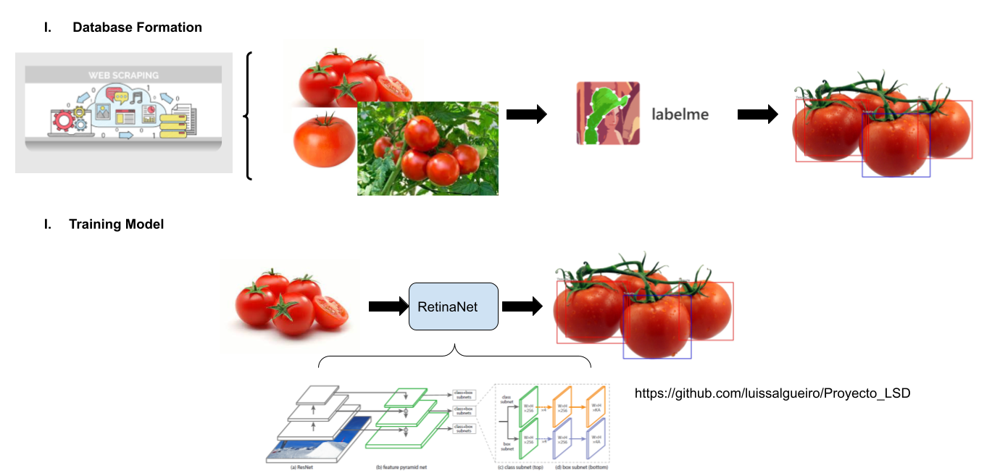
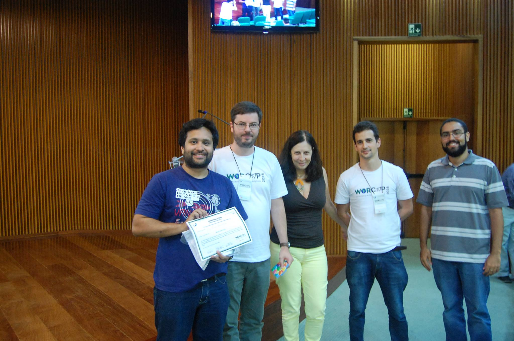
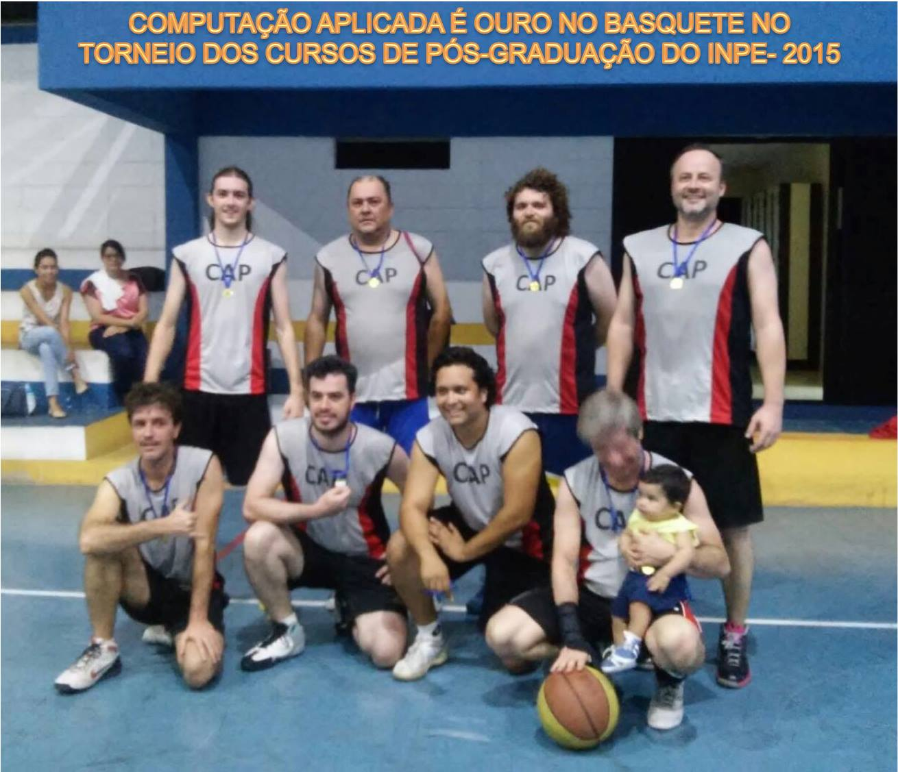
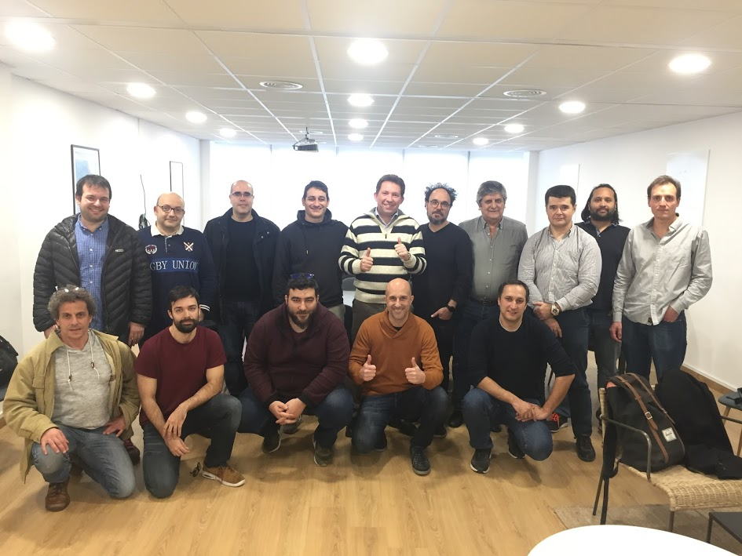
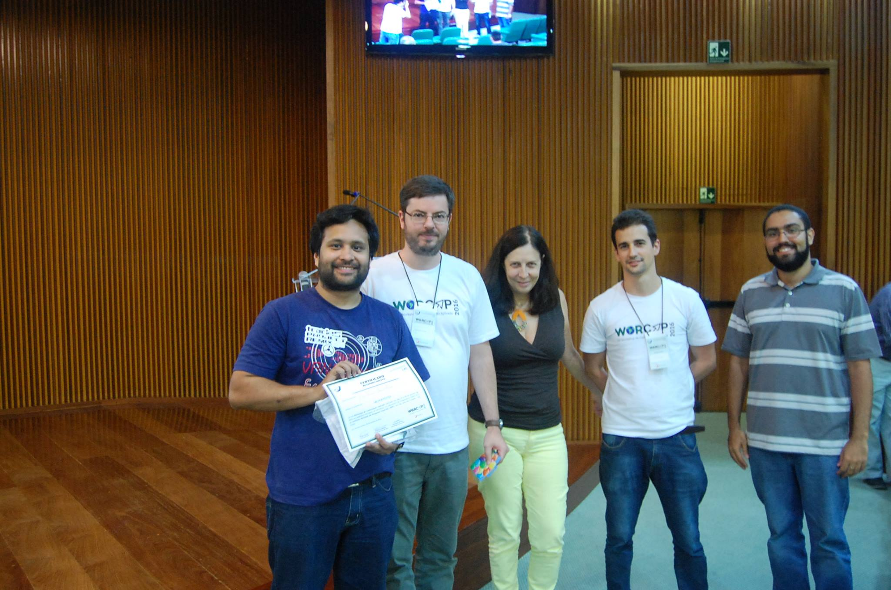
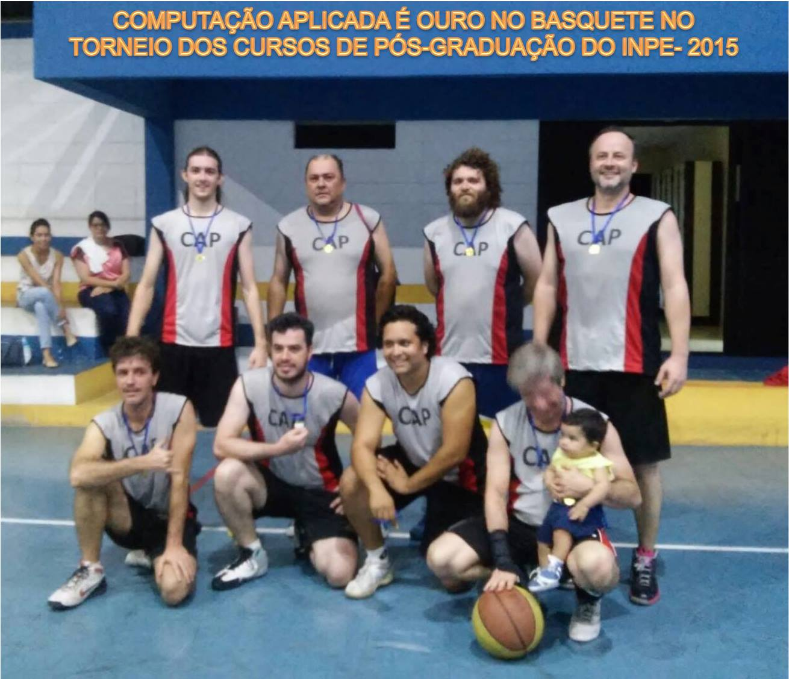
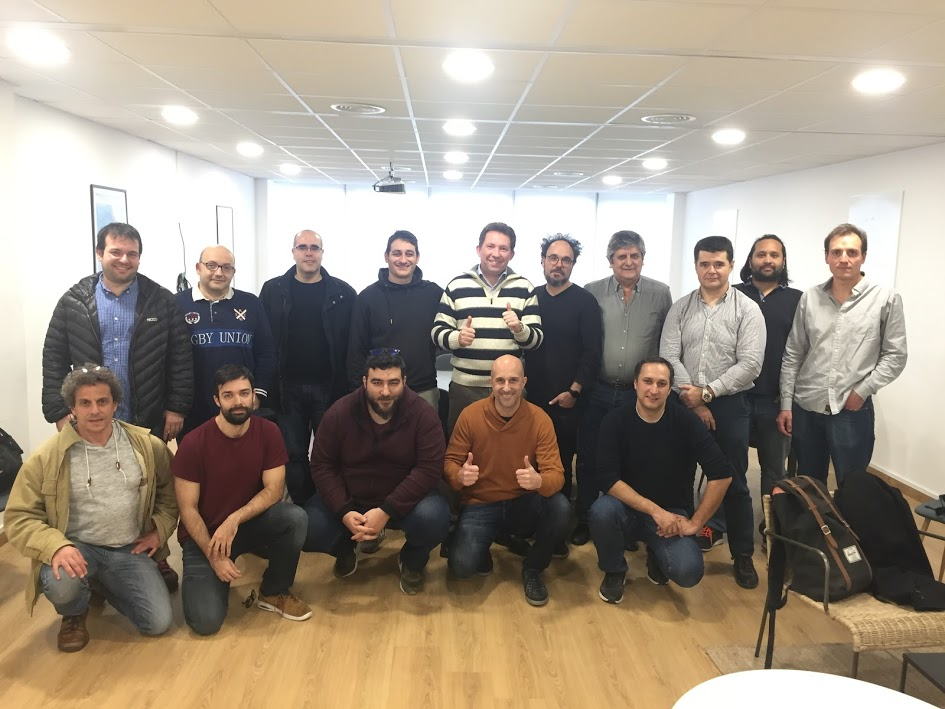

Ph.D. in Image Processing and Remote Sensing images, developing deep learning models for super-resolution and semantic segmentation.
Experience
Lecturer and Laboratory Instructor
Barcelona Technology School
Deep learning instructor giving some of the lectures and hand-ons Laboratory with Google Colab.
May 2021 - June 2021
Consultor of Conacyt Project - Paraguay
Software Diagnostic Tool for Dermatoscopy lesions
I was part of the team of developers, my task was to advise on the latest technique in Deep Learning models for classification and semantic segmentation.
I gave some initial tutorials to the team and pointed some very useful materials that have served as the basis for our solution.
As a team, we managed to present a working product and also some academic papers as a result of our research.
More details about the project can be refered in this link (in spanish) and a
webinar (in spanish).
September 2020 - November 2021
Deep Learning Laboratory Instructor
Universitat Politècnica de Catalunya
I was part of the instructor for the Master Course
"Deep Learning for Artificial Intelligence" .
I gave some initial lectures about Pytorch and presented some hand-ons materials to the group.
May 2020
Ph.D. Candidate
Remote Sensing Image Processing
I work in the intersection of Deep Learning applied to Earth Observation images.
My research focused on super-resolution of Sentinel-2 images, semantic segmentation,
and multi-tasking. The main objective is to provide a model that can enhance the spatial
resolution of Sentinel-2, from native 10 m/pixel to 2 m/pixel.
Sentinel-2 is a multi-spectral satellite, which imagery follows an open-data distribution. Some of its bands have already 10 m/pixel suitable for several applications. However, for small-scale studies, the details offered are not enough making necessary to purchase imagery from commercial satellites with better spatial resolution. Therefore, the main objective is to develop a model that can super-resolve Sentinel-2 imagery to resemble the details obtained by commercial satellites.
To validate our model, we also tackle the semantic segmentation task that is very useful in remote sensing applications like Land-Use-Land-Cover. We tackled with a multi-tasking approach, so the input image can be super-resolved, and also presented an enhanced segmentation map with better performance than using native Sentinel-2 imagery.
Due to the lack of databases in this area, I constructed the pairs of images for the dataset, pre-processing the remote sensing images, labeled part of the images to create the segmentation ground truth, and trained the models.
As part of the research, several articles came that in the publication sections. I am working on the manuscript for Defense in September-2022.
Super-resolution of 20m and 60m bands of Sentinel-2 to 10m GSD.

In this work, we proposed a novel Convolutional Neural Network architecture to process the bands of Sentinel-2.
With the help of the 10 m/pixel bands, the 20 m/pixel and 60 m/pixel bands were super-resolved at once to have
10 m/pixel as well. Besides, we showed that by using our SR results, a better performance can be obtained in the generation of indices maps as well as in bathymetry studies.
In this work we proposed a Generative Model for Sinle-Image Super-Resolution of Sentinel-2 imagery. Our model accepts bicubic interpolated Sentinel-2 images with 2 m/pixel and produce
and enhanced image with better spatial details and texture. Image (a) is the corresponding WorldView-2 image at 2m GSD, just plotted for comparison and not used as input to the model,
(b) and (c) are NN and Bicubic interpolations of Sentinel-2 from native 10 m/pixel to 2 m/pixel., (d) to (g) other SR models, (h) and (i) our results.
March 2018 - Present
Research Assistant
National University of Asunción (FIUNA)
I worked as a part of a team in a precision agriculture project. I was responsible in the development of an algorithm to detect tomatoes in the plants.
I constructed the database for training the model by scrapping images from the web, annotating the bounding boxes and later training a
keras.

August 2017 - Present
Research Assistant
National University of Asunción (FPUNA)
I've worked as a Research Technician, responsible for the mathematical simulation of redox reactions.
The project aimed to achieve the best way of reusing industrial waste like scrap to reduce the amount
of chromium VI in the residual water of leather industries. I was in charge of studying parameters relationship
and obtaining the best combination for this reduction.
August 2013 - December 2014
Electronic Technitian Intern
National Administration of Electricity (ANDE)
I did my internship practice in the Telecomunication Department of ANDE as a part of my undergraduate course, where
I participated in the development of telecommunication projects between Energy stations.
June 2012 - August 2012
Education
Universitat Politècnica de Catalunya (UPC) - Spain
We present a generative model for super-resolution of Sentinel-2 imagery (from 10m to 2m of GSD), using WorldView-2/3 imagery as ground-truth for training.
We present a Convolutional Neural Network for producing the SR of the 20m and 60m bands of Sentinel-2 to 10m GSD. Different from others approaches, our network
is capable of performing the SR of both set of bands at once, outperforming other SOTA models. We also show the benefits of using our model for improving semantic segmentation tasks
and the obtaining of several Remote Sensing indexes as NDVI.
Based on the DeepLabV3+ model for semantic segmentation, we proposed modification to the networks to provide a dual Super-Resolution and Semantic-Segmentation of remote sensing imagery,
in particular, with Sentinel-2 images. We improved the Segmentation and SR results compared with plain DeepLabV3+.
ICASSP 2020 - IEEE International Conference on Acoustics, Speech and Signal Processing (ICASSP)
In this work we explored a Weakly-supervised technique for semantic segmentation based on a few annotations.
We first enlarge this annotations with a SVM by taking the most confident results as seeds and then trained a DeepLabV3 models.
We obtained better results than an SVM with this approach on an Hyperspectral Image from the Teide Natural Park of Spain.
Internet of Things (IoT) with Arduino and Raspberry-pi. Development with Grafana, NodeRed and VPN (Mikrotik).
Mathematics and Statistics: Linear Algebra, Calculus, statistical analysis, hypothesis testing.
Languages
Spanish (Native)
English (C1)
Portuguesse(C1)
French(A1)
Interests
Apart from the Ph.D., I enjoy practicing sports. Nowadays, I run every day and I love to practice table tennis.
These activities relax me a lot and keep my focus on my work.
Now that I have moved to a new city, I also love exploring it with a bike tour.
I also enjoy cooking with my wife, following some sci-fi and thriller genre movies and series, and I spend a good time exploring the recent tools and papers about Deep Learning.
I plan to improve my skills in SQL and learn about Reinforcement learning and Data Engineering.
 




